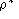

| Mark Reed | and | Ken Flurchick + | |
| Dept. of Physics and Astronomy, | +MCNC - North Carolina Supercomputing Center | ||
| University of North Carolina at Chapel Hill, | 3021 Cornwallis Road, | ||
| CB# 3255 Phillips Hall | |||
| Chapel Hill, NC 27599 | Research Triangle Park, NC 27709 |
User Track - General Science
Scientific visualization is a method to display the results of computer simulations and/or experimental measurements. In this paper, we present the visualization of results of a simulation of transport properties of a moderately dense gas.
In this work we display the results of the simulation showing the positions of the particles in the simulation, including the effects of periodic boundary conditions using the dynamics_view module. The distribution of energy, force and density, through the system as the system evolves is also displayed using a color map. An input menu allows for the selection of parameters to be displayed such as velocities, forces and potential energy.
Keywords: Scientific Visualization, Thermodynamics, Statistical Mechanics, AVS
The method of molecular dynamics (MD) has been applied to a wide variety of problems and is well established as a very useful tool for studying the microscopic and macroscopic properties of atoms and molecules. While this extremely useful technique has been extensively applied in the investigation of liquid properties[1], only infrequently has it been used to investigate properties in the gas phase and then primarily at elevated densities[2,3,4]. The decrease in collision frequency with density is the primary reason for the dearth of simulations at low densities, as it gives rise to two (related) problems. The evolution of particle dynamics is driven by collisional interactions which implies that macroscopic quantities of interest will evolve more slowly at reduced densities where collisions are less frequent, and, the reduced collision frequency implies that particle correlations will persist for longer time periods thereby decreasing the sampling efficiency of phase space.
Computing the evolution of particles in a potential field is a common technique covering atomic and molecular systems in the gas or liquid phases. Numerical determination of the atomic positions and velocities for use in determining the statistical thermodynamics and related dynamic properties of an atomic or molecular assembly is accomplished by solving;
This produces configurations in phase space, as a function of time. Thermodynamic properties such as the virial, or the transport coefficients can be constructed from the position and velocity information for each particle. For most systems, the forces acting on the particles can be determined from the gradient of a scalar potential function. For the simulations done in this work, the interaction potential is the Lennard-Jones potential.

These two parameters allow one to define reduced units (denoted by
* ) in terms of
and
 ,
see [1] for details.
,
see [1] for details.
The focus of this research has been on gas dynamics and transport properties. The approach has been to use a computer simulation to describe the evolution of the particles through phase space. This is but a specific case of a more general problem, that of visualizing particle simulations. The AVS module developed is a general purpose dynamics viewer called dynamics_view, which is suitable for visualizing a wide variety of particle simulations. The module takes as input, the number of particles in the simulation and their positions and velocities. The module outputs both a field and a geometry, thus the module can display both space filling and localized properties. In addition, numerous widgits provide a great deal of flexibility in visualizing the system. The module is designed to display identical particles interacting via a Lennard-Jones potential but the modular design should allow easy adaptation of other force fields or varying particle sizes. This is an exploratory visualization project. By focusing on the microscopic building blocks, particle positions and velocities, it is hoped that more complex, multiparticle properties can be built up and visualized. Functionality of dynamics_view Module
There are four basic tasks performed by this module: computation of a grid spanning the unit cell, computation of field values on this grid, display of the particle geometry, and display of particle velocity streamers.
The grid is an isotropic 3-dimensional rectilinear field with uniformly spaced data points. The number of grid points is specified by the user through a type in widget with a fixed cell length of 1. Currently the grid completely spans the unit cell, this is accomplished by adding an additional ``dummy'' grid point and invoking periodic boundary conditions to set it's value. The quantity to be computed and displayed at these mesh points is selected by a widget. The current choices are the potential energy, force magnitude and the number density. Since many simulations employ a cutoff for the potential, the module provides a widget to input this value (in reduced units). The force calculated is the magnitude of the force experienced by a LJ test particle situated on the grid point, taking into account the cutoff. The particle density is computed by binning the particles into bins centered on the grid points.
Spheres, with radius specified through a type in widget, are used to display the particle positions. In addition, the spheres are colored by velocity from blue, the coldest (slowest), to red, the hottest (fastest). The minimum and maximum speeds used to color code the particles are computed and displayed on a widget thus allowing the user to change the color range as desired. Finally a streamer, displayed by a series of disjoint lines, indicating previous positions is attached to each particle. This line is also color coded by velocity, which can vary over the length of the tail. The tail length, in time steps, is once again under user control through a type in widget.
Three views of the potential energy field in the unit cube are displayed in Fig1. For the upper cubes, orthogonal slicer modules are used to make two slices through the field, the colors range from blue for the most negative potential regions to red for the regions of highest potential, the zero of the potential appears yellow-green. The cell in the upper left hand corner shows just the field values, while the upper right hand picture shows the particles superimposed on the field. Note that the volume bounds module, with the bottom grid turned on has been included as an aide to the eye. The bottom cell in fig1 uses the isosurface2[5] module to show the zero equipotential surface, this surface was then color coded with the magnitude of the force, from blue (lowest) to red (highest).
Fig2 shows the velocity tails or streamers, attached to the spheres for data from a simulation of 32 particles with  = 0.005 and 0.1 at T* = 0.8 The module tube has been used to make the tails more visible. This visualization displays a velocity field and a convenient way to trace trajectories. Fig2 is one snapshot, however, in practice a series of time slices would be read in and driven (e.g. with animate integer) to give a dynamic view of particle evolution. Note, as expected, the lower density shows particle tails that are, for the most part, straight lines and a solid color (indicating no change in velocity), although in the foreground you can see a three body collision has just taken place. The streamers give both the history of the trajectory and the history of the velocity changes. The higher density cell on the right shows streamers that are qualitatively different, the trajectories are more erratic and show much more color variation. Note that the particles displayed in this cell are drawn with a radius of 0.25 as opposed to those in the lower density which are represented by spheres of radius of 0.5
The final figure, Fig3, shows the variation in the potential energy field as one goes from a lower, = 0.01 to a higher density, = 0.10, gas. The same color map is usd for both pictures but the figure on the left is drawn with a sphere radius of 0.5 while the spheres on the right have been reduced to 0.35 to make the grid more visible.
Fig1 This figure shows three views of the unit cube.
This figure shows three views of the unit cube with the potential energy field displayed. The cell in the upper left hand corner shows just the field values, while the upper right hand picture includes the particles superimposed on the field. The final cell shows the zero equipotential surface color coded by the magnitude of the force.
Fig2 This visualization gives you a velocity field and an easy way to trace trajectories using velocity tails or streamers, attached to the spheres.
Fig3 This figure shows the variation in the potential energy field as one goes from a lower, = 0.01 to a higher density, = 0.10, gas.